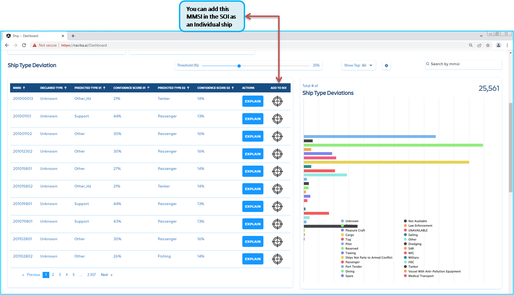
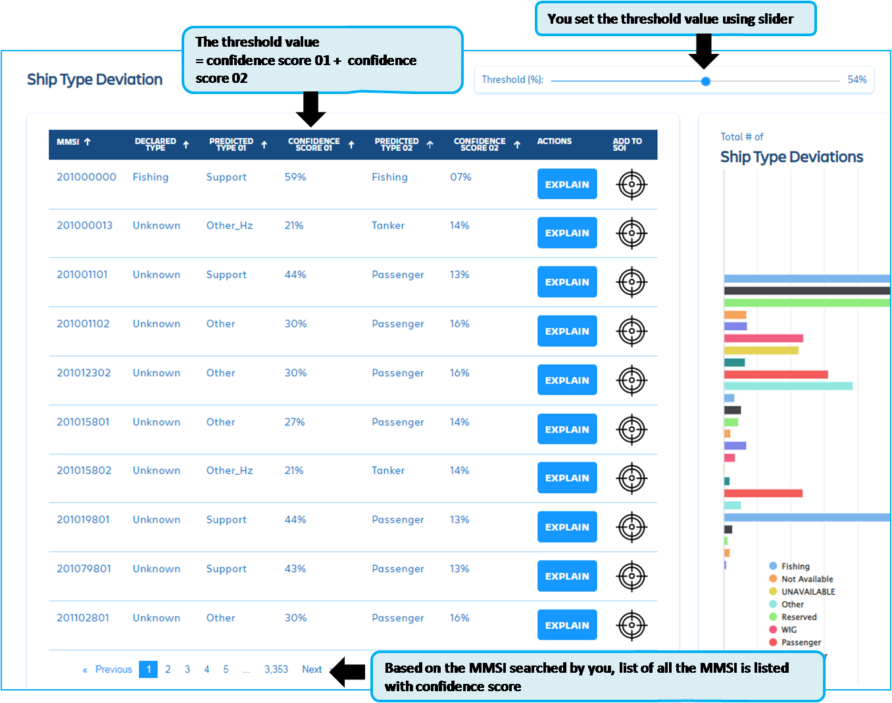

Dashboard¶
test-this text should be *Blue*
A data dashboard is an information management tool used to track, analyze, and display key performance indicators, metrics, and data points.
You can use dashboard to monitor the overall health of your business, department, or a specific process. Dashboards are customizable, too.
A dashboard is a type of graphical user interface which often provides at-a-glance views of key performance indicators (KPIs) relevant to a particular objective or business process.
In other usage, “dashboard” is another name for “progress report” or “report” and considered a form of data visualization.
Further to the data analysis, you can view more detailed data along with Bar chart for different type of ships. So first login as indicated in the Fig. 35 either in Current date and time or Adjusted date and time.
Fig. 35 Login to Application¶
In the navigation bar, click on the Dashboard button as indicated in the Fig. 36 after clicking, you will be directed to Dashboard
Fig. 36 Click on Dashboard¶
Now you are in Dash Board, it has complex data analytics can be viewed with Bar charts. You can select neigbhouring countries and MMSI of your choice, this will be stored in your user profile. When you login later can view the selected and set date / time.
Dashboard has five(5) sub-sections.
Dashboard is diplayed in 5 sub-section as indicated:
Countries of Origin - (Ships belongs to one of the neigbhouring countries, you can select countries/country in the menu)
Ship type deviation (Ship type / category Anomalies)
Destination deviation (Ship has not reached to declared destination, deviated destination)
Incursions into Indian waters (Shipps entered into Indian waters without proper marine protocols)
Anchorage deviation (Ship has to anchored in Anchorage Point, but anchored in other Anchor area, find the distance between Anchor point to Area )
Lets start from Country or countries of origin, In the Fig. 37
A. Country or countries of Origin:¶
Fig. 37 Dashboard main page¶
Dashboard has listed 9 neighboring countries. In the Fig. 40 you have option to select the country, so the dashboard will display the total number of ships.
refer next section for more details.
When you login to Dashboard through current date and time, may not able to find any ships. You have option to Adjust the date and time in the Dashboard panel. In the Fig. 38
Fig. 38 Dashboard Adjust Date and Time¶
In the Fig. 39 date and time is set to 01-Apr-2018 05:30:19 hours for the available data on this date. At this date and time, the avalibale data is 941 ships(it is example, data values may vary)
In this Fig. 41 menu indicates the total number of vessels/ships.
When you select any country, ship count is populated. You can observe the total count and neigbhouring country ship count, these data are historical AIS data.
Fig. 41 Countries of Origin selection¶
Total vessel count
Neighboring vessels/ships count
Currently 9 number of neighboring countries are listed for you to select by clicking over the country button
Chart is displayed with different categories of the ships count
One option in this table is you can add MMSI to your Ship of Interest (SOI) directly from this table. The following as indicated in the Fig. 42
Fig. 42 DashBoard Ship of Interest¶
As indicated in the Fig. 43 when you click on the crosshair, this will add directly and store in your profile.
Fig. 43 SOI Added Crosshair is in Red¶
You can visit the Live Map / Ship Map and check that the ship is added in the Individual ship list. As indicated in the Fig. 44 thus the option to add multiple ships also by the same procedure by click over the crosshair.
Fig. 44 SOI Added Individual Ship in the Live Map¶
B. Ship type deviation:¶
Deviation is taken place either for safety or other factors. In the Fig. 45 indicate the Ship Deviation table navigation bar. You set the Thresold value by sliding the pointer, value will be in percentage.
In the Ship type Deviation navigation bar you can set the Thresold percentage value and search one MMSI or matching with series of MMSI.
As indicated in the table, in the Fig. 45
Fig. 45 Shipytpe_deviation-NavBar¶
In this Fig. 46 in this table,
Fig. 46 Ship type deviation¶
Ship type deviations predictions and display based on confidence score
You can set the threshold percentage, it will compute in the back end for confidence score to populate the table
You can view the table header with predicted type and confidence score
Total number of Ship type deviations in graphical chart
You can click on explain button for the details of prediction and confidence score.
Fig. 47 Shiptype deviation with predict and confidence score Table¶
MMSI = Ship MMSI (you have searched and selected)
Declared type = Category type declared and received AIS data
Predicted type 01 = This process done by ML / AI model and display the category
Confidence Score 01 = This process done by ML / AI model and display the category
Predicted type 02 = This process done by ML / AI model and display the category
Confidence score 02 = This process done by ML / AI model and display the category
Actions = You can click and change the Ship parameters
Add to SOI = You can add the the selected MMSI to Ships of Interest (SOI only)
In the table Fig. 48 indicates complete details of the declared and predicted details.
Fig. 48 Shiptype deviation with predict and confidence score table¶
In the Fig. 49 indicates how to set using slider button. The value by subtracting the confidence score 01 and 02.
This will be computed in the back end. If final Confidence score value is less than the set Threshold percentage(%). The table will be populated based on this value.
Fig. 49 Shiptype_deviation with Confidence score¶
The following figures will expalin about the setting the Threshold value to 1% , 50% , 100%. So you can understand the analysis of the Ship Type deviations.
Once you have set the Thresold value, table is refreshed and displayed accordingly.
If you change the value , that is by changing the slider position for thresold value, the table will be refreshed, by computing to the set thresold.
In the Fig. 50 indicates the Threshold slider set to 1%.
As you can observe the total number of ships will vary, based on the Threshold percentage(%).

Fig. 50 Shiptype deviation table with 1% threshold¶
In the Fig. 51 table is updated with the predicted and confidence score. This table is for the Threshold slider set to 1%.
Subsequently the bar graph is plotted for the number of ships and per type of ships.

Fig. 51 Shiptype deviation table with 1%¶
As shown in the Fig. 52 You can hover the mouse cursor over the bar graph, it will highlight the particular ship type and number of ships in this prediction and threshold value.

Fig. 52 Shiptype deviation in Bar Graph¶
As explained in the previous topic, bar graph in the Fig. 53 indicates the bar graph.

Fig. 53 DashBoard Shiptype deviation - Bar Graph-1%¶
For your understanding, we have explained for the Threshold value of 50% and 100%. the following figures for your understanding.
You can observe the changes in the number of ships with respect to Threshold value. Refer the figure Fig. 54 for the 50% threshold value.
Refer the figure Fig. 58.


Refer the figure Fig. 58. Thus process done by ML / AI model and display the table.For threshold value set to 100%.


One more option is available in this table is “Explain”. if you click on “Explain” button, pop-up window will display the AI/ML predicted in graphical presentation.
If you required to change the ship parameters, click on the user button by this it will open user input table.
In this table you have option to add the ship to your Ship of Interest. You can click on the crosshair icon to add.
By default the crosshair will be in the black colour. If you have click and add to your Ship of Interest, Crosshair turns to Red colour.
In the :numref:
D. Incursions into Indian waters:¶
In this :numref: #`Incursions_into_Indian_waters` menu indicates the incursions of the vessels/ships inside Indian waters.
# .. _Incursions_into_Indian_waters:
# .. figure:: img/dashboard/Incursions_into_Indian_waters.png # :align: center # :figwidth: 75%
Ships Incursions into Indian waters
Set the date range: for the details to be extracted for the particular period
Ship type selection: Select particular type or multiple selection, also any type.
Select Country of origin: Selection of country or countries required.
By clicking on the check box, Play button will be enabled: you can click on play button to view the trajectories.
Clicking on the play button plays the trajectory in the region it has incursions occurred :To diplay the trajectory of the selected MMSI/ship.
You can check the other pages by clicking on different pages: click to scroll across different pages.
Under development¶
In the :numref: #`Destination_deviation2` display the table of Destination deciation,in this table you can observe the Declared Destination, predicted Destination, actual destination
# .. _Destination_deviation2:
# .. figure:: img/dashboard/Destination_deviation2.png # :align: center # :figwidth: 80%
Destination deviation
You can set the Date range.
Table with Status is one with completed journey or in transit ; Declared Destination; predicted Destination; actual destination.
Destination deviations is one of challenging in marine field. As you predict, but the ship is reached different destination or declared destination.
E. Anchorage deviation:¶
Under development¶
Anchorage one of the deviations from the ships may occurs due to varying factors, You can observe the table in the :numref: #`Anchorage_deviation`
In the anchorage deviations, you have to set the date range to analyse the deviations for the MMSI’s. The following details of data displayed in the table
MMSI
Date & Time
Anchorage Point
Nearest Anchorage Area
Area to Point Distance
Occupancy Rate
Actions (Goto Map)
# .. _Anchorage_deviation:
- # .. figure:: img/dashboard/Anchorage_deviation.png
- align
center
- figwidth
80%
Anchorage deviation
This indicates deviations, when the nearest anchorage area and distance between point of anchorage. Later you may wish to open map for the verification where actually the ships are anchored.